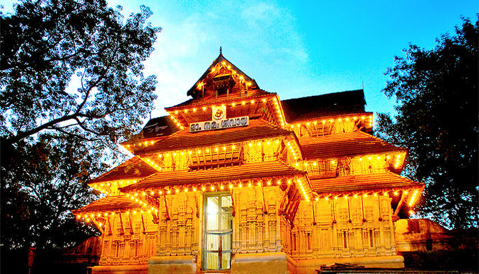
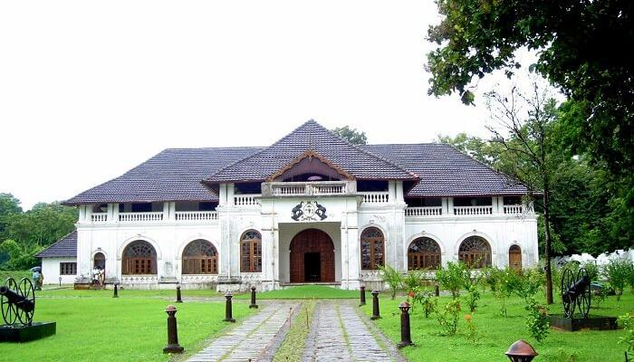
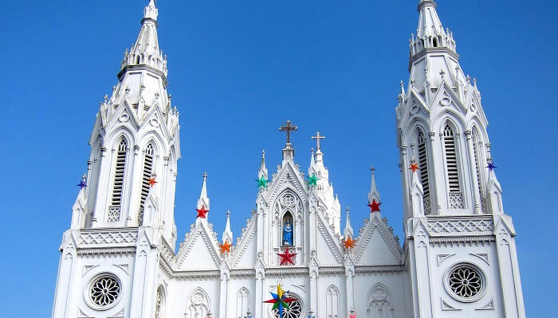
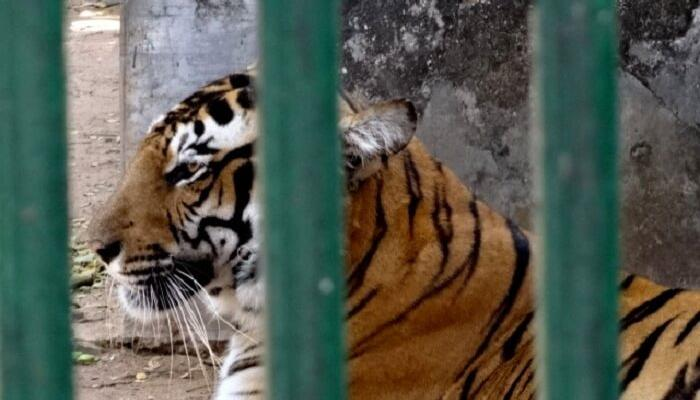
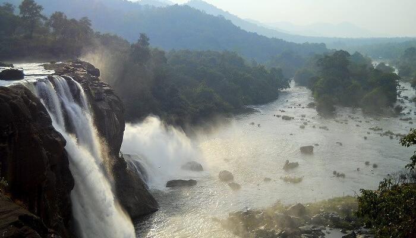
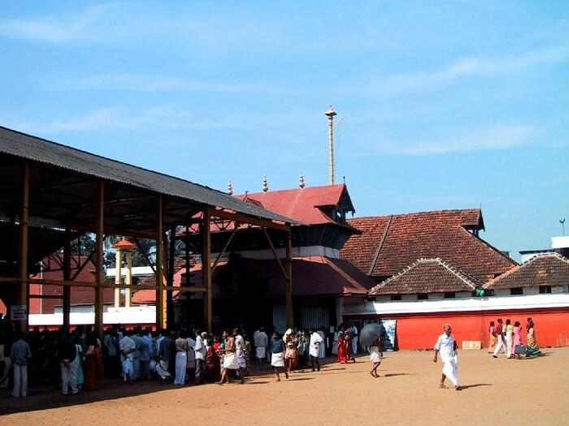

VADAKKUNNATHAN TEMPLE
Being the oldest and most famous temple of Lord Shiva in Kerala, Vadakkunnathan Temple is amongst the top Thrissur tourist places that you must include in your trip itinerary. The classic architecture and murals on the inside of the temple offer a perfect glimpse of the cultural side, which make it one of a kind in the city.
Timings: Open on all days of the week from 3:00 AM to 8:30 PM

SHAKTHAN THAMPURAN PALACE
The best places to visit in Thrissur can ever be complete without including the Shakthan Thampuran Palace in it. Built by Raja Rama Varma IC in 1791, the palace’s Dutch-style architecture is a captivating sight to behold, especially for art admirers. Though, what makes it unique are the attractions inside it like a small museum that showcases antiquities and old relics.
Timings: Open on all days of week from 9:30 AM to 4:30 PM

BASILICA OF OUR LADY OF DOLOURS
Situated amidst the lush green valleys, the Basilica of Our Lady of Dolours shines like a white gemstone in the city. The legends of faith and love behind this shrine make it quite different from the other ordinary churches, and also a haven for peace seekers visiting the city.
Timings: Open on all days from 6:00 AM onwards

THRISSUR ZOO & MUSEUM
Located right in the heart of the city, the Thrissur Zoo & Museum is one of the best places to visit in Thrissur. While the beautiful flora and fauna in the zoo are perfect to calm the wildlife enthusiast within you, the artefacts in the museum are best to treat the history lover in you.
Timings: Open on all days of the week from 10:00 AM to 6:30 PM

ATHIRAPILLY WATERFALLS
Located 60 km from the city, Athirapally Falls is amongst the top places to see in Thrissur. The 80 feet high and 330 feet wide falls come all the way from the Anamudi Mountains and are often called as the Niagara Falls of India. If you’re looking for a blissful escape, don’t think much and head right to this place.
Timings: Open on all days from 8:00 AM to 6:00 PM

GURUVAYUR TEMPLE
Home to the historic legends, Guruvayur Sree Krishna Temple is not only one of the best places to visit in Thrissur, but also the most popular. From the architectural beauty of the temple to the minute crafts within, everything is worth witnessing, especially when lit.
Timings: Open on all days of the week from 3:00 AM to 1:30 PM and 4:30 PM to 9:15 PM